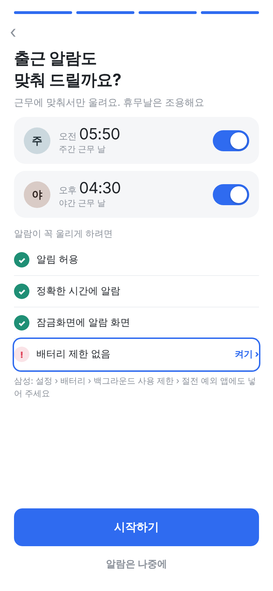
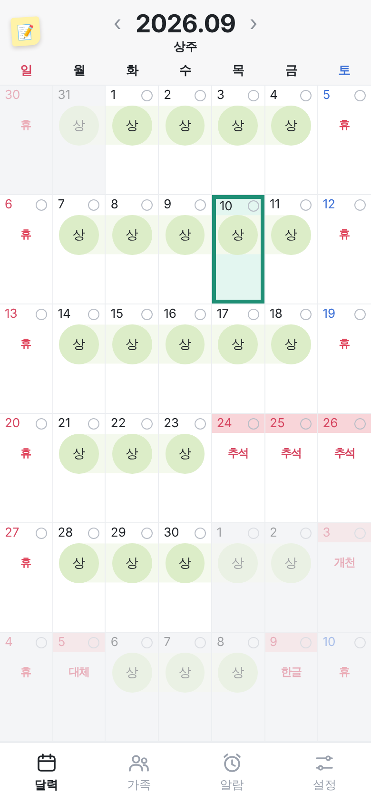
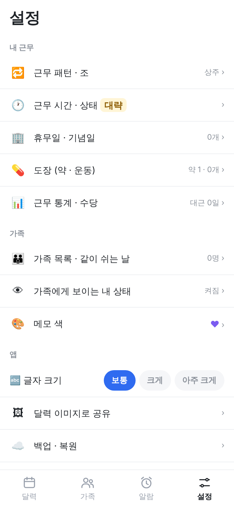
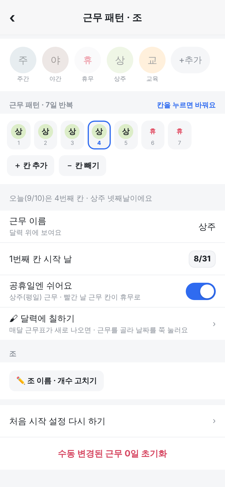

① 배터리 제한 없음
꺼져 있으면 점검 목록에 뜸 · [켜기] 누르면 허용 창
(켜져 있으면 안 보임)

② 상주: 공휴일 칸에 이름
"휴" 대신 추석 · 개천 · 대체 · 한글 (2글자)
도장은 위 날짜 줄 그대로 · 토·일은 "휴"

③ 조 1개: 동료 근무 숨김
설정 "내 근무"에서 동료 근무 줄이 빠짐

④ 조 1개: 조별 근무 표 숨김
"조 이름 · 개수 고치기" 버튼만 남음
조를 늘리면 표가 다시 보임
